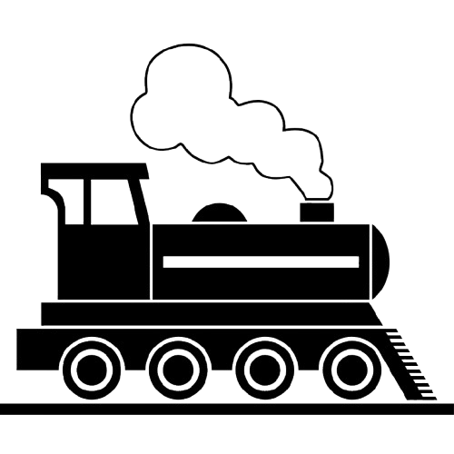

ASTRAL
EXPRESS
Bem vindo(a), Admin!
Acompanhe em tempo real o desempenho da malha ferroviária, gerencie sensores e trens, visualize relatórios e monitore os usuários do sistema de forma prática, rápida e eficiente.

Olá, Admin

Acompanhe em tempo real o desempenho da malha ferroviária, gerencie sensores e trens, visualize relatórios e monitore os usuários do sistema de forma prática, rápida e eficiente.
